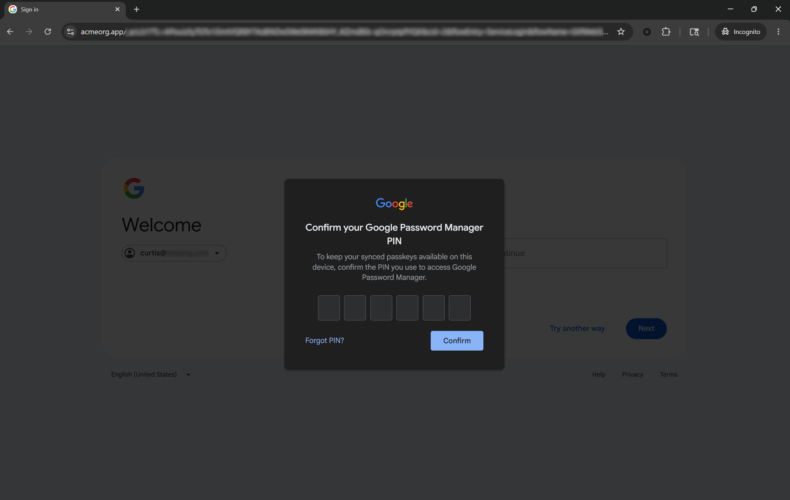
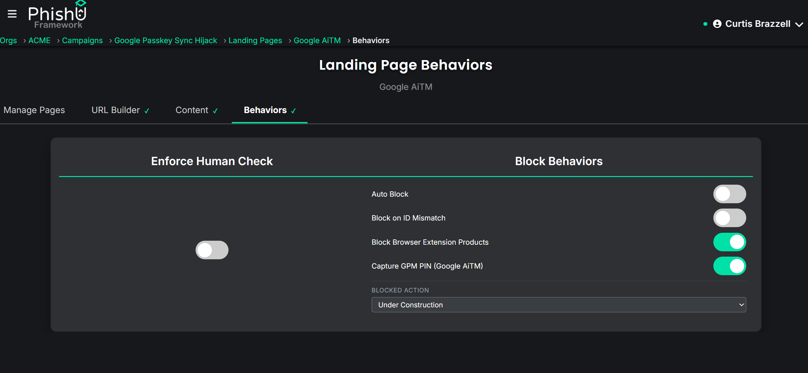
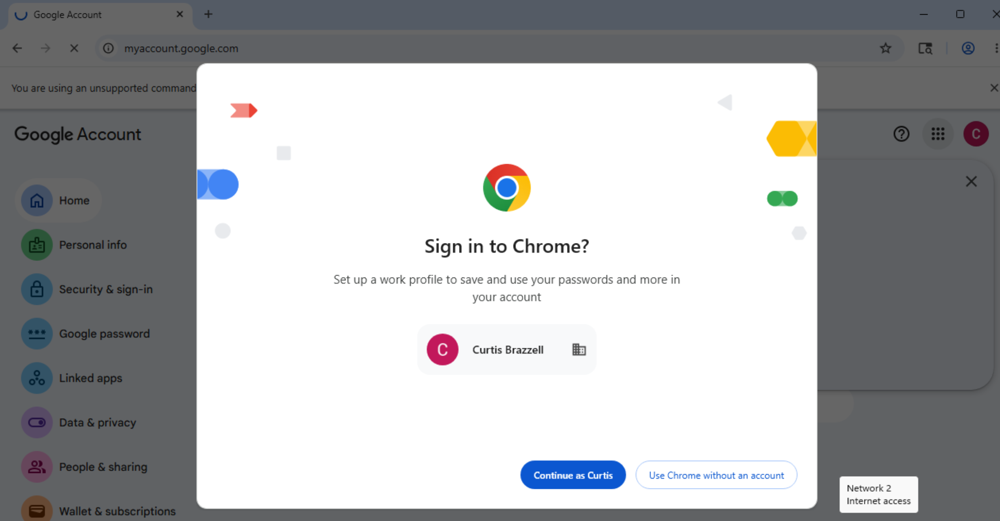
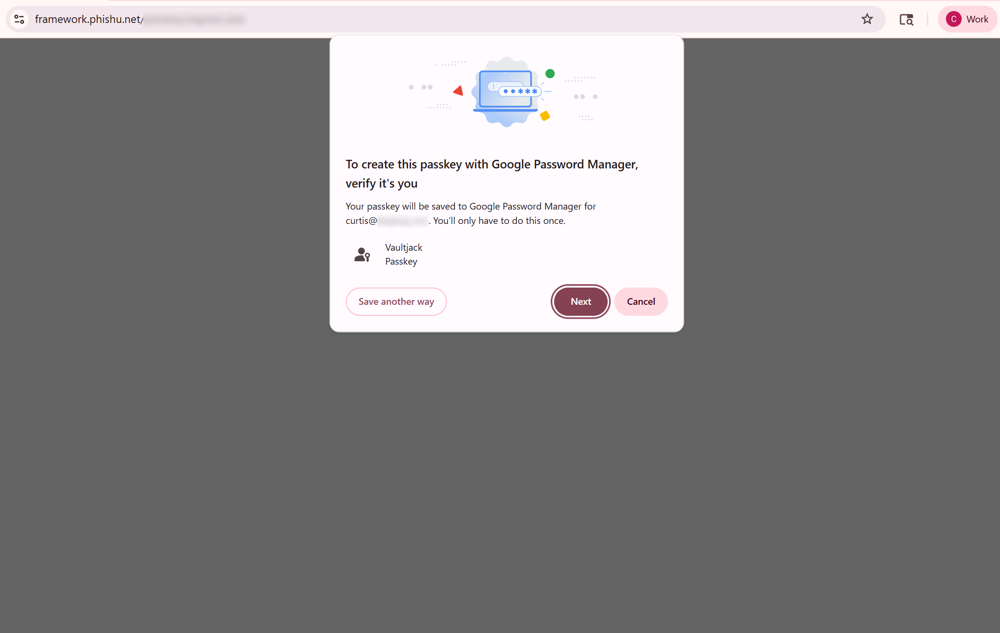
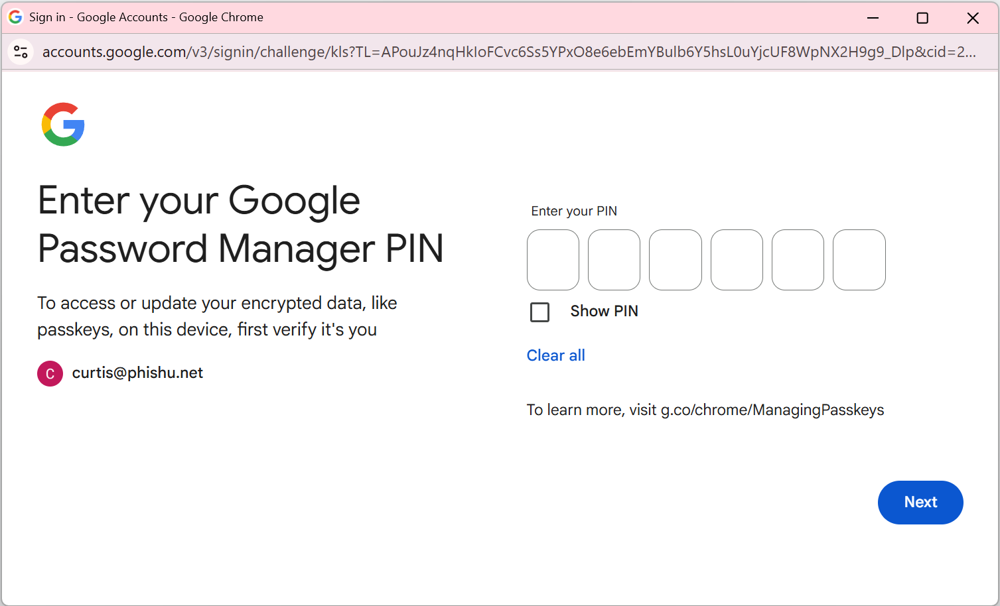
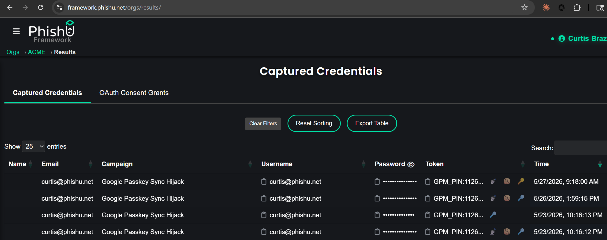
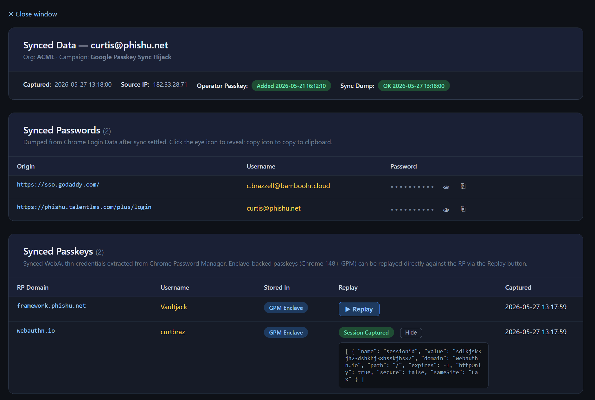

We are calling it Vaultjacking. One captured Google Password Manager PIN, and a phishing attacker walks away with the victim's entire passkey and password manager vault. Banking, email, source code, workplace single sign-on, crypto exchange, anywhere the user chose to lean on Google Password Manager (Chrome) to remember them. One phishing engagement, total compromise.
Post-publication note: After this article published we became aware of Browser Syncjacking, a separate technique that reaches the same Google sync layer using a malicious browser extension installed on the victim's machine. Vaultjacking requires no foothold on the victim's device and no extension. It is fully inline with standard Adversary-in-the-Middle phishing. We tested the technique end to end against live GPM accounts, including replay of captured third-party passkeys regardless of whether the original credential was hardware-backed.
One captured 6-digit PIN unlocks the entire Google-managed credential vault on a device the operator controls. Every synced password and every synced passkey the victim has ever saved, decrypted in one operation, on infrastructure the operator owns. No per-site retry. No rate limit. One phish, N credentials.
Passkeys do their job at the per-site login layer. The WebAuthn handshake binds the credential to the site's origin, and that binding cannot be relayed. Vaultjacking targets a different layer: the sync layer underneath. Google Password Manager (GPM) synchronizes passkeys and passwords across every device that joins the user's security domain. The store on each device decrypts with a key called the Security Domain Secret (SDS), which Google's cloud authenticator releases to a device when that device joins the security domain. The join is governed by one short secret: the user's 6-digit GPM PIN. Capture that PIN during a normal Adversary-in-the-Middle (AiTM) sign-in, replay it later from operator infrastructure, and the entire synced credential vault decrypts on the operator's machine.
The PhishU Framework now ships Vaultjacking end to end. The AiTM proxy captures the PIN alongside the session cookies on the phishing Landing Page. A background worker automatically adds an operator-owned passkey to the victim's Google account for long-term persistence. A second worker joins the security domain from operator infrastructure, types the PIN at the unlock prompt, and writes the unwrapped credentials back to the engagement database. The operator clicks one icon in the Captured Credentials view and sees the entire vault.
This research extends a thread Curtis Brazzell, PhishU's Flounder and CEO, has been pulling on since 2020. That year he published Phishing Your Password Manager on Medium, documenting how subdomain autofill rules in major password managers allowed a shared apex domain plus a JavaScript-controlled subdomain to harvest stored credentials directly from the autofill engine. That technique targeted the local per-site decision a password manager makes when it decides whether to fill a form. Vaultjacking targets the same class of trust-boundary problem one layer up: the cloud-side decision about which devices get to read the entire synced vault, governed by a single short secret rather than per-site origin matching.
How Synced Passkeys Actually Work
A Google account has a security domain. Devices that join the security domain can read every synced passkey and password on the account. A review of the Chromium source (chrome/browser/webauthn/enclave_manager.cc and components/trusted_vault/) shows the join flow on a new device requires two server-validated checks: a normal Google account sign-in, and a successful entry of the user's GPM PIN.
Google does enforce reauthentication at the sign-in step for new-device flows, and that reauthentication is a genuine security measure that challenged the technique during development. The Framework gets through it using the operator-owned passkey added in Step Two: by the time the sync-dump worker signs in from new infrastructure, that passkey is already registered on the account, so Google's reauth ladder accepts the passkey assertion (silently answered by the worker's virtual authenticator) rather than demanding a push or SMS challenge to the legitimate user. Past that one gate, there is nothing else. No push to existing devices, no "approve from another device" prompt. The PIN verifies, the cloud releases the SDS, and the new device decrypts every passkey on the account.
The structural choice that makes this work is the absence of cross-device approval. Apple iCloud Keychain prompts every existing device to approve a new one joining the keychain. Google does not. This is not an oversight: Google chose 6-digit PIN with a low server-side retry cap over Apple's push-to-existing-devices model because lost-device recovery is a real UX problem the push model makes worse, and they evaluated phishability as an acceptable tradeoff. Adding a new device to the security domain fires a single "new sign-in on Windows" email to the recovery address, identical to the one Google sends on any new-Chrome login. Other Chrome instances on the account stay silent. Push notifications do not fire. Mobile devices do not prompt. In an AiTM engagement that captured the victim's inbox, the operator suppresses the email before the user sees it.
Step One: Phish the PIN
The Framework already performs AiTM against Google: the proxy sits between the victim and accounts.google.com, captures the password and session cookies, and stores everything in the engagement database. Vaultjacking adds one new piece: a modal that pops up after the password step asking the victim to confirm their GPM PIN.
The modal is styled to match Google's own PIN prompt (same font, same six-cell input layout, same copy: "Confirm your Google Password Manager PIN to keep your synced passkeys available on this device"). The runtime shim renders it when the user reaches the password page on the proxy and disables the underlying password field while the modal is up, so the victim cannot bypass it by typing further. Most users enter the PIN, because they have seen this exact prompt during legitimate Google flows. The captured PIN posts back through the runtime shim's diagnostic beacon and lands on the same engagement-database row as the session cookies.

To enable this for a campaign, the operator flips one toggle on the Landing Page Behaviors tab: "Capture GPM PIN." The toggle only appears on Landing Pages that target Google identity provider domains. No other configuration. The runtime shim, the capture endpoint, the database schema, and the reporting view are already wired.

Step Two: Add an Operator-Owned Passkey for Persistence
Google's session model is the tightest of the major identity providers. Session cookies rotate frequently, refresh tokens are short-lived relative to Microsoft Entra, and sensitive-action reauth windows are measured in minutes. Google has also begun rolling out Device Bound Session Credentials (DBSC), which binds the session to a hardware-attested key on the legitimate user's device with the intent of making stolen cookies unusable on a different machine. DBSC is a real defense against post-compromise infostealer cookie replay; per the W3C specification, it is not a defense against AiTM, because the proxy is the legitimate client from the server's perspective during the live authentication and negotiates the hardware-attested key in the normal handshake. The Framework's Google AiTM proxy already handles DBSC transparently. What captured cookies cannot do is survive expiry. That is where the operator-owned passkey enters.
For every AiTM Landing Page targeting a Google identity provider, the Framework now adds an operator-owned passkey to the victim's Google account immediately after the AiTM capture completes. The persistence worker drives a Playwright Chromium context with the captured session cookies, registers a new passkey through the standard myaccount.google.com/signinoptions/passkeys surface, and extracts the private key from the Chrome DevTools Protocol virtual authenticator that signed the registration. The credential lands in the engagement database alongside the rest of the captured material.
The operator-owned passkey is a fully valid credential on the account, indistinguishable from any passkey the user added themselves. It survives password resets, cookie expiry, refresh-token rotation, and any future DBSC enforcement. For Vaultjacking specifically, the sync-dump worker uses it to authenticate back into the victim's Google account from operator infrastructure long after the original cookies have expired. From that authenticated session, the Framework's own controlled registration endpoint requests a new passkey creation. Chrome prompts for the GPM PIN as part of the security domain join that registration triggers — and that PIN entry releases the Security Domain Secret for the entire vault, not just the credential being registered. This persistence behavior is default-on for every AiTM Google Landing Page. No per-campaign configuration. The only outward signal is the standard Google "New passkey added" email, which the operator can suppress through the captured inbox.
Step Three: Join the Security Domain on Operator Infrastructure
The Framework's sync-dump worker takes the captured GPM PIN and the operator-owned passkey credential and enrolls a fresh device on operator infrastructure as a peer in the victim's security domain. The fresh device is a real Chrome instance, with the operator passkey pre-loaded into a CDP virtual authenticator that answers the WebAuthn assertion during sign-in. The Google sign-in completes without a password prompt because the passkey is now the strongest enrolled factor. The SDS unlock dialog fires when the worker triggers a passkey assertion against a controlled Relying Party endpoint the Framework operates for this purpose. The worker types the captured PIN into the dialog. The SDS unlocks.



From there Chrome behaves exactly as it would on any legitimate new device. The Login Data store populates with every synced password, which the worker reads off disk, decrypts via DPAPI, and writes to the engagement database. Passkeys in Chrome 148 and later work differently: account-backed GPM passkeys no longer write raw private-key bytes to the local Passkeys SQLite file. Signing operations go through Google's enclave server-side via the passkey_enclave_state blob in the Chrome profile, and raw key material never touches disk. What Chrome does expose is passkey metadata: the Relying Party identifier, username hint, and credential ID, which the worker reads via Chrome's internal chrome.passwordsPrivate API and stores as the Synced Passkeys inventory. Passkey replay uses the enrolled VM Chrome session directly rather than raw-byte extraction. That model is described in Step Four, and it is actually stronger: enclave-mediated signing works against hardware-backed passkeys as well as software-backed ones, because Google's enclave is the signer once the device is enrolled in the security domain, regardless of the original authenticator type.
The single most important observation is that the SDS is a master key, not a per-credential key. One successful PIN entry on the security-domain join releases every passkey the victim has ever synced, in one operation, on the joining device. No per-site retry. No per-credential PIN re-entry. No rate limit per Relying Party. One phish, N passkeys.
The cost of capturing six digits during a normal sign-in is identical to the cost of capturing the password, and that single capture yields the full graph of every Relying Party where the user has chosen passkey authentication. If a security-conscious user enabled passkeys on their primary email, their workplace SSO, their source code repository, their financial accounts, and their cryptocurrency exchange, that set is what arrives in the operator's database.
Inside the Sync-Dump Worker: TPM-Backed Windows Infrastructure
Chrome's security-domain join is not a casual operation. Chrome's enclave manager generates a fresh device identity key locally, seals the private half against the device's Trusted Platform Module (TPM), and sends the public half to enclave.ua5v.com as part of the join handshake. The cloud enclave records that key as the device's permanent identity within the security domain. Every subsequent sync-layer interaction authenticates against the TPM-sealed key. There is no documented software fallback in the Chromium source. Without a real TPM, the join does not complete and the SDS unlock cannot fire, which makes automating this on standard Linux infrastructure non-trivial.
The Framework's sync-dump worker satisfies this with a virtualized TPM. The worker runs inside a containerized Windows VM with a virtualized TPM that presents to the guest as a standard system TPM, generates real key material, performs real attestation, and is accepted by Chrome's enclave manager as the device's hardware-backed identity. The Windows VM exists for one purpose: to satisfy the TPM-attestation step.
End to end: when a captured-credentials row lands with a GPM PIN and an operator passkey, the persister enqueues a sync-dump job. The Windows VM starts a fresh Chrome profile, loads the operator-owned passkey into a virtual authenticator, drives Chrome through the Google sign-in using that passkey, types the captured PIN into the SDS unlock dialog, waits for sync to populate the Login Data store, decrypts synced passwords via DPAPI, and enumerates passkey metadata via Chrome's internal API. The Chrome instance remains live and enrolled in the victim's security domain. That enrolled session is what the passkey-replay path uses on demand, without ever extracting raw key material. All results write back through the SMB share. The operator sees none of it. They click the key icon on the captured Google session row and the synced vault is there.
Step Four: Use the Vault
What an engagement operator actually sees, day to day, is a Captured Credentials table with a new icon on Google AiTM rows that have completed Vaultjacking.

Clicking the key icon opens the Synced Data drilldown, an authenticated view enforcing the same per-organization access control as the rest of the captured-credentials UI (cross-customer access rejected at the SQL layer with a 404). The page has a summary card naming the victim, the engagement, the source IP, and the time each phase completed, followed by two tables.
The Synced Passwords table lists one row per third-party password the victim saved to GPM, with the origin URL, the username, and the password decrypted server-side. Passwords mask by default with eye-to-reveal and click-to-copy.
The Synced Passkeys table lists one row per site where the victim has a synced passkey, showing the site name, username hint, and credential identifier. Clicking "Use Passkey" drives the Framework's session hijack pipeline through the enrolled VM Chrome: a Playwright session navigates the already-authenticated Chrome instance to the target site and triggers the passkey sign-in flow. Chrome routes the WebAuthn assertion challenge to Google's enclave. The enclave signs it server-side using the victim's credential and returns a valid assertion to the site. The Framework captures the resulting authenticated session and returns the operator a hijack URL. Because signing is enclave-mediated rather than local-key-based, this replay works against hardware-backed passkeys as well as software-backed ones.

The operator workflow is the same as it was for AiTM-captured Google sessions before Vaultjacking: click an icon, get an authenticated session. The difference is that the target is no longer just Google. It is every site where the victim has chosen to use a passkey, plus every site where the victim has saved a password to GPM. The customer report at the end of the engagement renders the chain in plain language with a per-Relying-Party breakdown of which downstream accounts are reachable, and the generated training covers the PIN-capture surface and the blast radius of a single captured PIN.
Empirical Stealth Observations
We instrumented the chain against burner Google accounts to look for cross-device alerting at each step. The findings:
- Operator passkey registration. One "New passkey added" email to the recovery address. No push, no in-app notification on other Chrome instances, no event in the user's Chrome activity log.
- Security domain join. One "New sign-in on Windows" email (or OS-equivalent). No push, no prompt, no approve-from-another-device step.
- SDS unlock. No external notification. Routine operation.
- Synced credential download. No notification. Normal sync behavior.
The only outward signals are the two emails. With AiTM-captured inbox access, the operator suppresses both. The victim's other Chrome instances do not receive any indication that a new device has joined the security domain.
The Defender Playbook
This is not a cryptographic flaw and cannot be fixed by changing the WebAuthn handshake or any per-site policy. The defender surface is the security-domain join. The actions that matter are:
- Tiered authentication strength. For admin accounts, IT staff, finance, executives, and source-code committers: enforce hardware-bound device-bound passkeys, no sync, no fallback. For knowledge workers and sensitive-data handlers: phishing-resistant authentication strength accepting synced passkeys, with monitoring on the security-domain join event. For everyone else: passkey enrollment encouraged, residual sync-layer risk explicitly accepted in writing.
- Monitor security-domain joins. Workspace tenants can see device-add events in Google Admin's audit log. Alert on unfamiliar device-add events the same way the security team would alert on a new admin account creation. The cadence is low, so the alert volume is manageable.
- Cross-device push approval on new device adds. A standing vendor ask to Google. Apple iCloud Keychain implements it. Google evaluated it and chose the current PIN-only design because of recovery-UX tradeoffs, so defender pressure is the only thing that shifts this. Treat it as a long-term ask, not a near-term fix.
- Scope SDS release to the credential being registered. Registering any new passkey with Google Password Manager today prompts for the GPM PIN and releases the Security Domain Secret for the entire synced vault. If Google scoped the SDS release to only the specific credential being created — rather than unlocking the full store on every registration — this attack chain breaks at Step Three. The same security-domain join mechanism that lets a legitimate new device sync all credentials is what gives the Framework's worker access to every password and passkey on the account. This is the more surgical of the two vendor asks, and the one most directly targeted at Vaultjacking.
- Evaluate third-party password managers for high-risk populations. Dedicated password managers such as 1Password and Bitwarden store credentials in their own encrypted vaults with no dependency on Google's security domain join or SDS architecture. Vaultjacking does not apply to them. An AiTM engagement that captures a GPM PIN gains nothing against a credential store that never touched Google Sync. For roles where credential exposure would be catastrophic, a third-party password manager is structural protection, not a config setting. Deploying one is also a forcing function for the tiered authentication posture in item one.
- Chrome profile hygiene as a security training topic. Two failure modes to train against explicitly. First: employees using their personal Chrome profile on a work device. A work-targeted AiTM engagement that captures the Google session exposes the personal GPM vault alongside the work one; the attacker does not distinguish which credentials are personal. Second: using a work Chrome profile to store personal site credentials or passkeys. A personal account breach that captures work-device session cookies now has a path to personal credentials synced into the same GPM security domain. The secure posture is one Google account per profile, personal credentials never in a work profile, and work credentials never in a personal profile.
- Email signal hygiene. Train users to treat "new passkey added" and "new sign-in on Windows" emails as authentication events worth verifying. These are the only outward signals the chain produces and they are routinely ignored.
The Defensive Takeaway
Passkey enrollment is a useful step, but not the finish line. The end-to-end attack on synced passkeys does not break the cryptography. It requires one captured PIN, an operator-owned passkey for persistence, and a worker that joins the security domain from operator infrastructure. The first two are part of what an AiTM-equipped operator already captures. The third is engineering, now built and integrated into a defender-side platform.
If your organization has shipped passkeys without also shipping authentication-strength enforcement and security-domain join monitoring, the threat model above is the one you are operating against. The right next step is not to retreat from passkeys. It is to deploy them with the tiering and monitoring the sync-layer architecture demands. Treat this as accepted-design-tradeoff territory, not as an unpatched bug awaiting a Google fix: the defender lever is at the policy and monitoring layer, not the vendor's patch cycle. The PhishU Framework will measure that exposure under fire as part of an authorized engagement and produce the customer report and per-recipient training automatically.